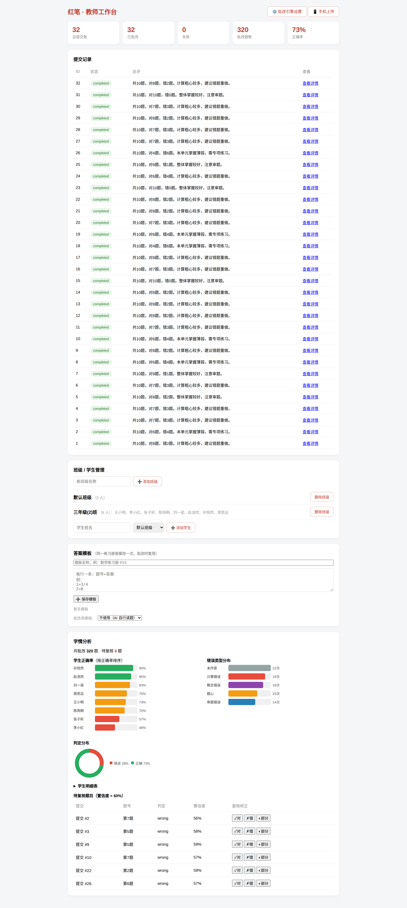
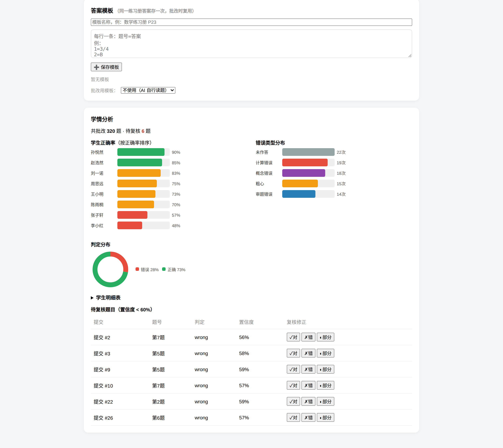
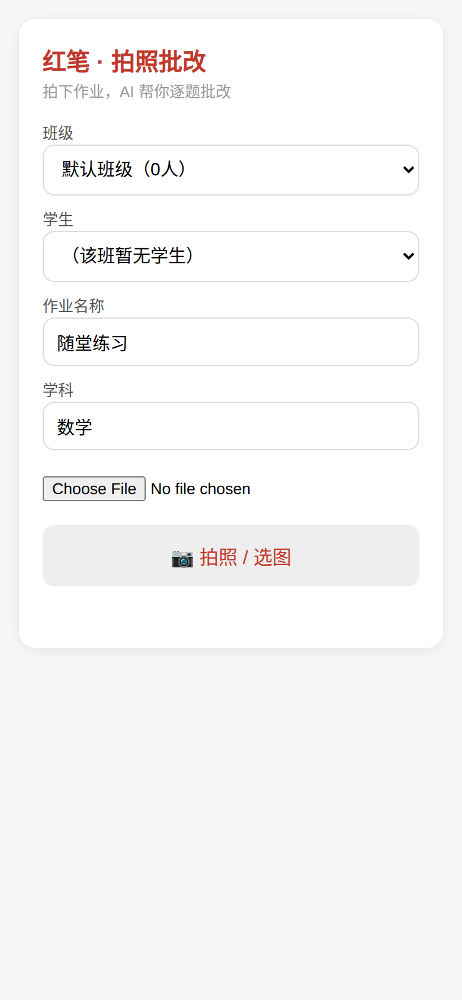
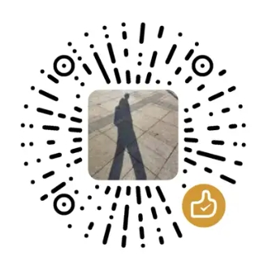

手机拍照 → AI 逐题批改 → 红笔标注回显 → 学情分析看板。装在教师自己的电脑上，数据不出本机，学生的每份作业都留档可查。
手机扫码连接，拍照 5 秒预览自动上传，无需安装任何 App。
AI 逐题判定对错、分析错因、给出置信度；规则层交叉校验，把模型犯错拦下来。
原图上画圈标记对错，右侧逐题卡片，像老师用红笔批改一样直观。
DeepSeek / 通义千问 / 智谱 / 自定义 OpenAI 兼容接口，填自己的 Key，主备自动切换。
错误类型分布、学生正确率、班级对比，数据看板一目了然。
Key、作业、成绩全部存在自己电脑，支持一键备份/恢复换机不丢数据。
下载 RedPen.exe 双击运行（首次运行点"更多信息→仍要运行"）。浏览器自动打开工作台。
设置页填入你的模型 API Key（DeepSeek、通义、智谱任选），建议先修改默认 PIN。
手机连同一 WiFi，扫设置页二维码打开拍照页，拍作业即可批改。

教师工作台：提交记录 · 班级管理 · 成本统计 · 学情分析

学情分析：学生正确率排名 · 错误类型分布 · 判定分布环形图 · 低置信度题目人工复核

手机端：扫码即开，拍照上传
免安装单文件 · 数据存于 exe 同级 data 文件夹，备份该文件夹即备份全部数据
首次运行若提示"Windows 已保护你的电脑"，点"更多信息 → 仍要运行"；杀毒软件误报请添加信任
请始终从本页或 GitHub Releases 官方渠道下载
📮 junyuzhan@outlook.com
🐛 GitHub Issues 反馈
📄 PolyForm Noncommercial 1.0.0
个人学习与学校/教师使用免费，未经授权禁止商用
软件对老师永久免费，打赏完全自愿，功能无任何区别。
